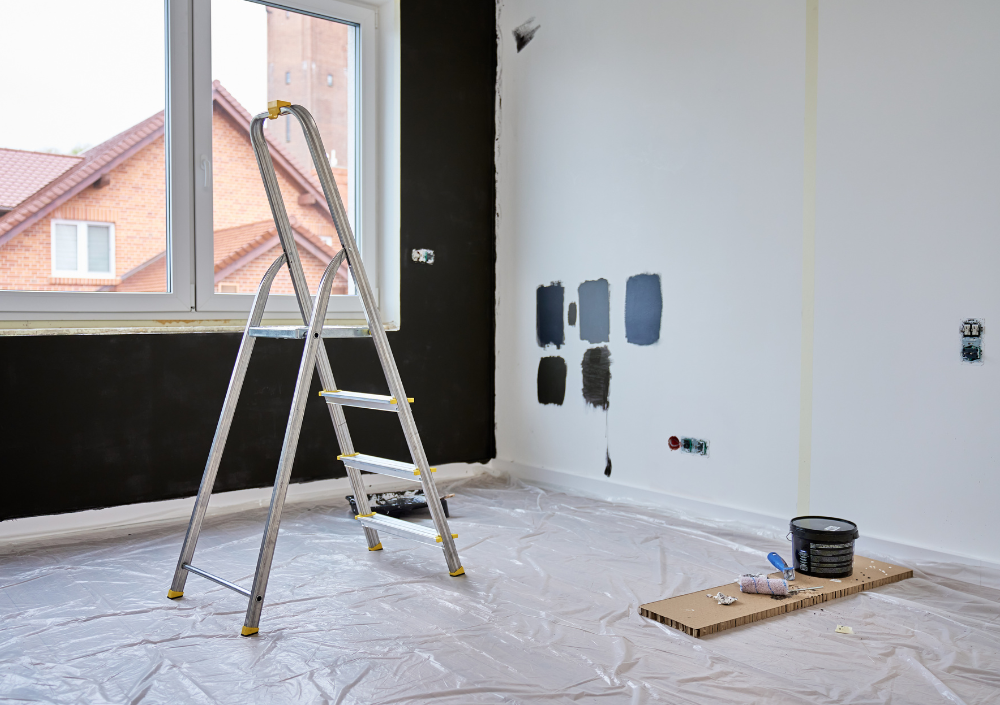

Lupa Painting Blog · Professional Trim Painting
How Professionals Paint Doors, Trim & Baseboards for a Smooth, Factory-Like Finish
Learn the precise prep work, tools, primers, paints, and application techniques professional painters use to achieve crisp edges, ultra-smooth trim, and a flawless high-end finish throughout your home.

Painting doors, trim, and baseboards is one of the most detailed and technical parts of interior painting. While walls can hide small imperfections, trim exposes everything: brush strokes, drips, scratches, uneven caulk, and low-quality products become obvious immediately.
That’s why professionals follow a multi-stage process that focuses on precision, surface perfection, and the right application technique. In this guide, you’ll learn exactly how pros achieve a smooth, durable, factory-like finish that stands up to daily wear.
1. The Perfect Finish Starts With Perfect Prep
Trim and doors take more abuse than walls — fingerprints, scuffs, vacuum bumps, and daily contact quickly break down poorly prepped surfaces. That’s why professionals spend extra time preparing every inch before painting.
Steps professionals take before painting trim:
- Degreasing and washing: use TSP substitutes or Krud Kutter to remove oils, skin residue, and old cleaner buildup.
- Filling dents and nail holes: apply wood filler or spackle, then sand smooth.
- Sanding for adhesion: scuff-sand glossy trim with 180–220 grit paper.
- Caulking gaps: apply paintable caulk to joints, seams, and cracks for a seamless, polished look.
- Dust removal: vacuum and wipe surfaces with tack cloths or microfiber.
Pro insight: 60–70% of a quality trim finish happens before any paint is applied. The smoother the surface, the smoother the final result.
2. High-Bond Primers: The Secret to Long-Lasting Trim Paint
Trim, doors, and cabinets almost always require primer — especially if the old finish is glossy or the surface has stains, knots, or uneven sheen.
Why primer matters for trim
- Improves adhesion so the new paint bonds tightly.
- Blocks wood tannins and stains from bleeding through.
- Creates a uniform base for smooth, consistent sheen.
- Prevents peeling in high-touch areas like door frames.
Primers professionals commonly use
- Zinsser BIN Shellac: premium stain-blocking primer for knots, odors, and heavy stains.
- Stix Waterborne Bonding Primer: ideal for glossy trim and doors.
- Sherwin-Williams Extreme Bond: excellent for adhesion on slick surfaces.
Skipping primer is one of the main reasons DIY trim paint chips, scratches, or peels within months.
3. Choosing the Right Paint: Durability, Washability & Smoothness
Trim paint must be harder, more durable, and more washable than wall paint. Professionals use specialized formulas designed to resist fingerprints, scuffing, and daily cleaning.
Most common pro-grade trim paints
- Semi-Gloss: the classic choice — durable, easy to clean, perfect for baseboards.
- Satin: softer sheen, used in modern homes for a more subtle look.
- High-Gloss: premium, mirror-like finish often applied to doors or accent trim.
Brands pros trust
- Sherwin-Williams Emerald Urethane Trim Enamel
- Benjamin Moore Advance
- Benjamin Moore Scuff-X Semi-Gloss
Pro tip: Waterborne alkyd paints like BM Advance give the smoothness of oil paint with low odor and fast drying.
4. How Professionals Apply Trim Paint for a Mirror-Smooth Finish
Walls can hide small roller marks — trim cannot. That’s why painters use specialized tools and a controlled, consistent technique to achieve a flawless surface.
Tools professionals use
- High-quality angled brushes (Purdy, Wooster, Corona).
- Fine-finish mini rollers (1/4" or 3/16" nap).
- HVLP or airless sprayers for ultra-smooth doors.
- Tack cloths to remove dust before each coat.
The professional application method
- Brush edges lightly with long, smooth strokes.
- Roll flat sections with a fine-finish roller to eliminate brush marks.
- Always maintain a “wet edge” to avoid lap lines.
- Sand between coats with 220–320 grit for a glass-like finish.
- Apply 2–3 coats for full durability and sheen consistency.
Doors often get removed, laid flat, and sprayed in a controlled area — this is how professionals achieve the “factory” look you see on high-end homes.
5. Drying vs. Curing: Why Trim Requires Patience
Trim paint may feel dry in hours, but it does not fully cure for days or even weeks. During this period, the coating hardens and becomes scratch-resistant.
Professional curing recommendations
- Allow at least 24 hours before heavy contact.
- Avoid cleaning trim for 7–14 days.
- Keep furniture, rugs, and pets away from freshly painted baseboards.
- Do not close freshly painted doors too tightly for the first 48–72 hours.
Rule of thumb: Full curing usually occurs around 14–30 days depending on the paint.
Conclusion
Painting trim, doors, and baseboards is an art that requires technique, precision, and attention to detail. With proper prep, the right primer, high-quality enamel paint, and professional application, you can achieve a finish that looks beautiful, lasts for years, and elevates the entire space.
Whether you're considering a DIY attempt or hiring a professional crew, knowing the correct process helps ensure a smooth, durable, high-end result every time.